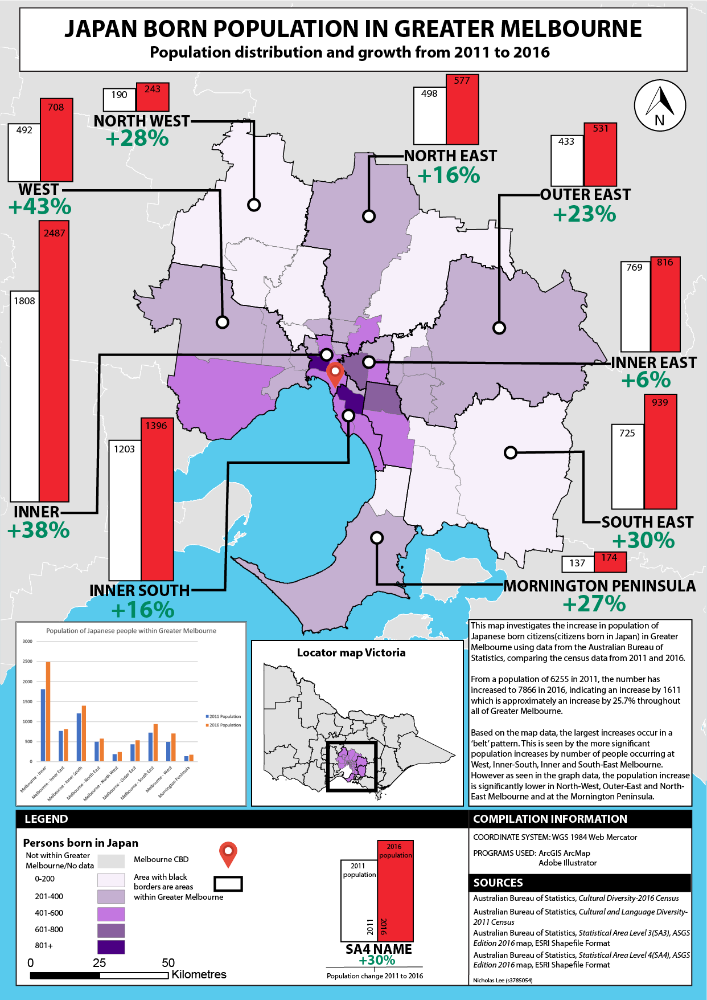
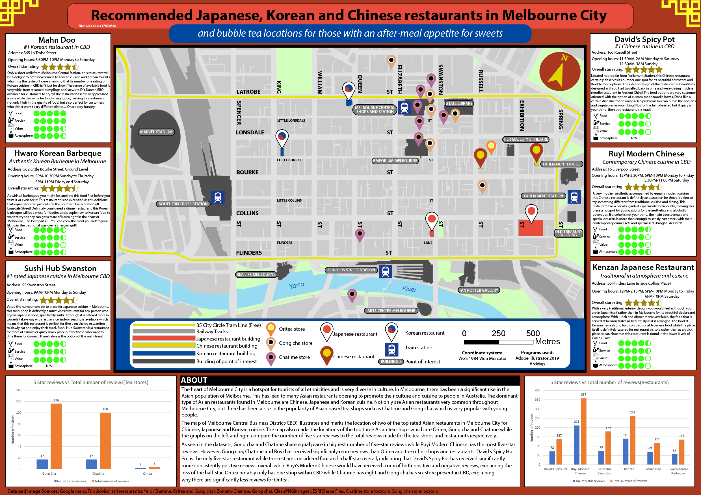
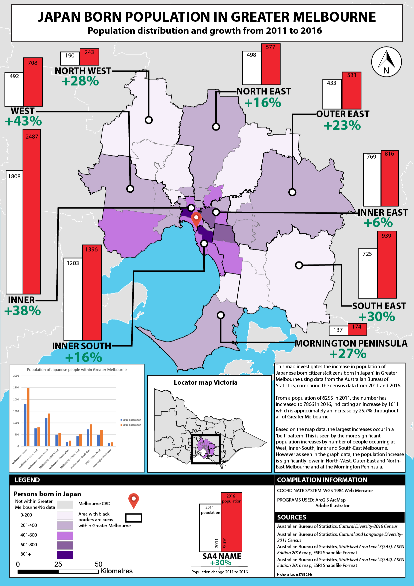
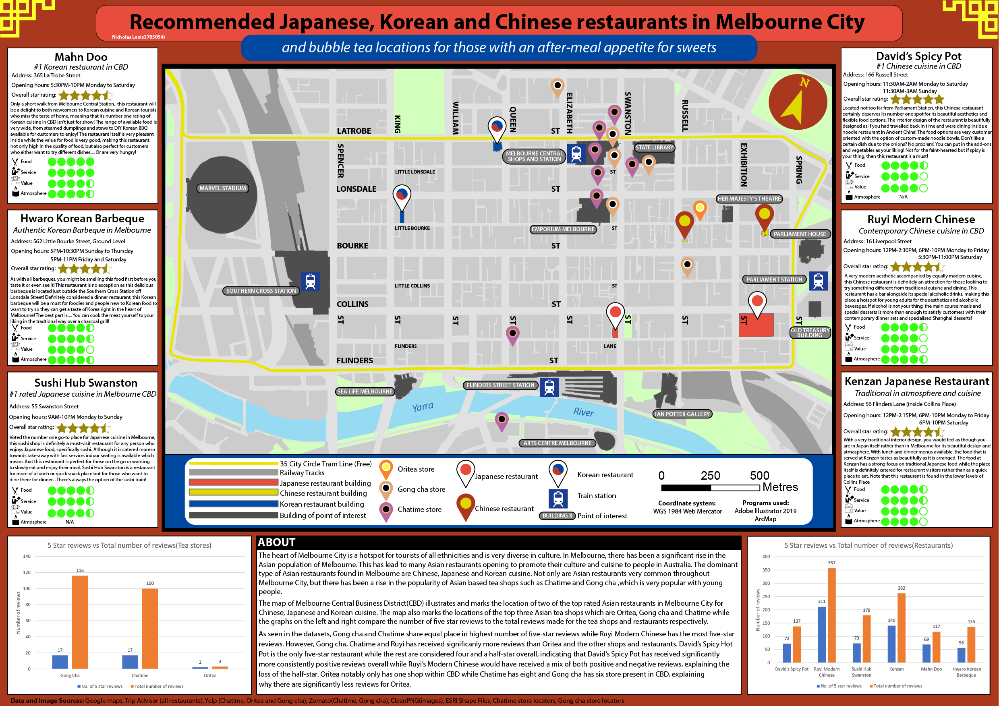

Overview
Geospatial Major Project
Applied Geospatial Techniques
Advanced SIS
Cartography
Distributed Mapping
UAS Operations
Acknowledgements
Below are the three maps that I have created as part of my course:
Note: If map display is too small, right-click the image and 'Open in new tab' to allow zooming of the map.
 



 |
 |
 |
|---|---|---|
|
RMIT City Campus Address:
124 La Trobe St, Melbourne VIC 3000 |
Email Nicholas Lee here:
s3785054@student.rmit.edu.au |
RMIT university landline:
(03) 9925 2000 |